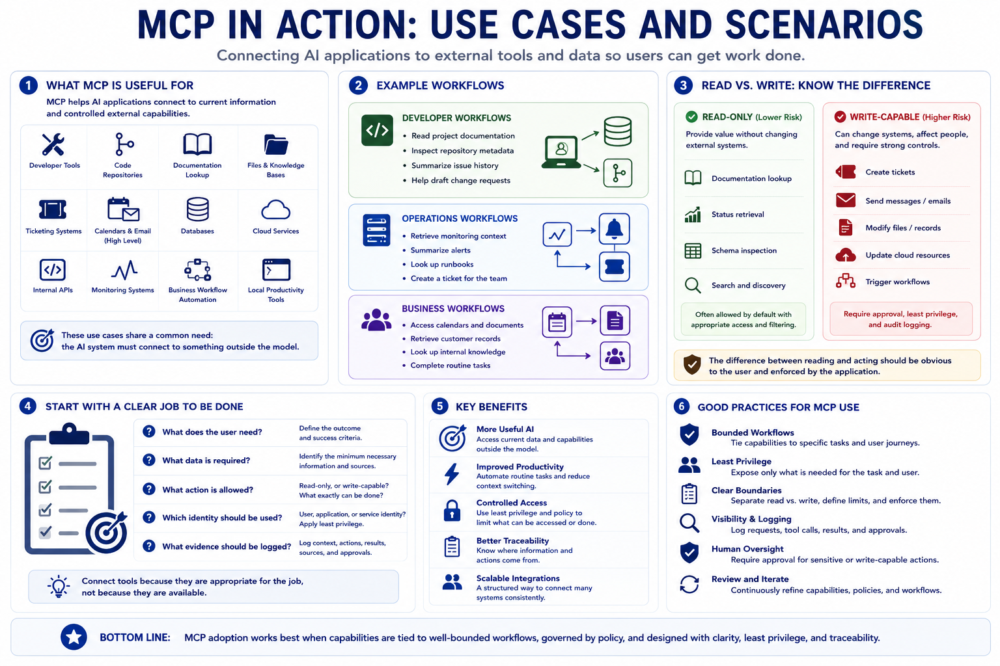

Common MCP Use Cases
Connecting to LMS... Progress: in progress

Narration
MCP is useful when an AI application needs current information or controlled access to external capabilities. Common examples include developer tools, code repositories, documentation lookup, file and knowledge-base access, ticketing systems, calendars and email at a high level, databases, cloud services, internal APIs, monitoring systems, business workflow automation, and local productivity tools. These use cases are broad, but they share a common need: the AI system must connect to something outside the model.
Developer workflows are a natural fit. An assistant may read project documentation, inspect repository metadata, summarize issue history, or help draft a change request. Operations workflows are another fit. An assistant may retrieve monitoring context, summarize alerts, look up runbooks, or create a ticket for a human team. Business workflows may use approved access to calendars, documents, customer records, or internal knowledge bases to help users complete routine tasks.
Some use cases should be read-only. Documentation lookup, status retrieval, schema inspection, and search can often provide value without changing external systems. Other use cases are write-capable and require stronger controls. Creating tickets, sending messages, modifying files, updating records, changing cloud resources, or triggering workflows can affect real people and systems. The difference between reading and acting should be obvious to the user and enforced by the application.
The best use cases start with a clear job to be done. What does the user need, what data is required, what action is allowed, which identity should be used, and what evidence should be logged? Without that clarity, teams can end up connecting tools because they are available rather than because they are appropriate. MCP adoption works best when capabilities are tied to well-bounded workflows, not treated as a universal permission to let the model do anything connected systems can do.